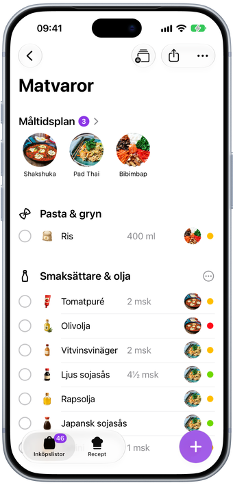
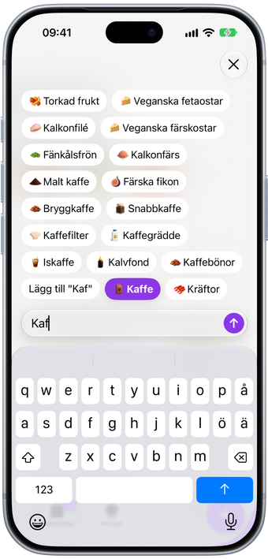
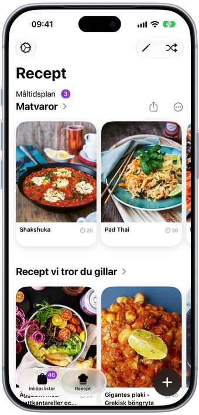
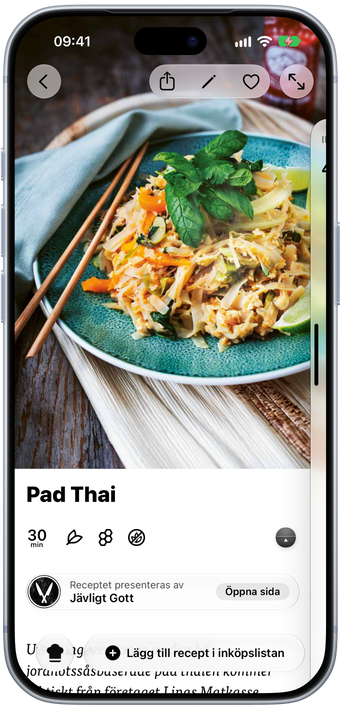
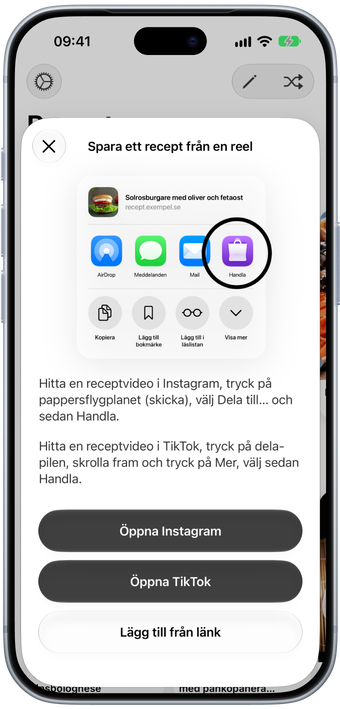
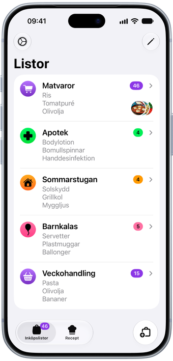
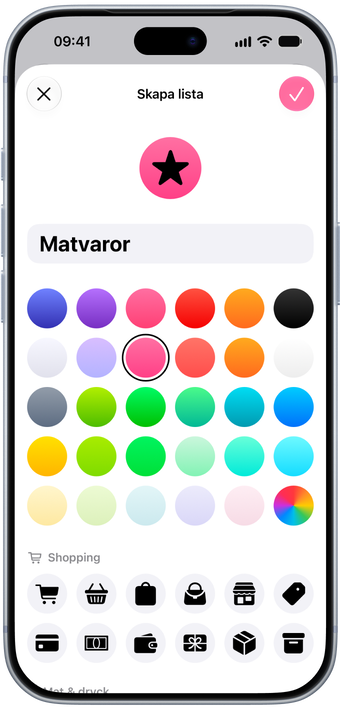
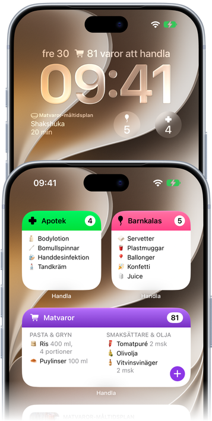
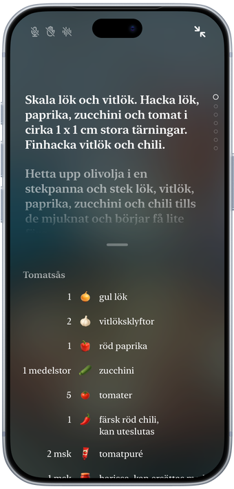
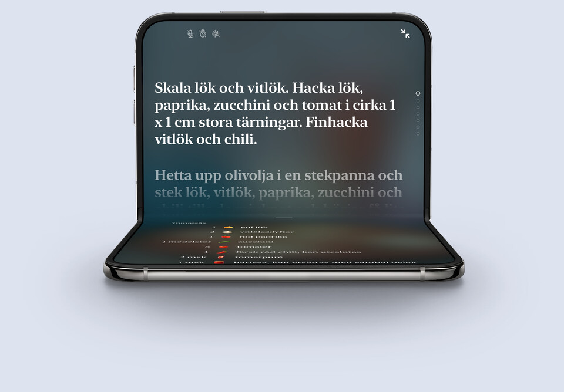

Inköpslista möter måltidsplan
Från recept till handlingslista, sorterad efter avdelning.
Från recept till handlingslista, sorterad efter avdelning.
Varorna sorterar sig själva efter butikens avdelningar, var och en med en egen illustration, och din måltidsplan ligger högst upp.

Skriv några bokstäver så föreslår Handla det du menar, och lär sig vad du köper oftast.

Klistra in en länk till en receptsida, en Instagram-reel eller en TikTok, så sparar Handla receptet med ingredienser.

Lägg till ett recept så hamnar ingredienserna direkt på listan, anpassade efter hur många ni är.

Hittat ett recept på Instagram eller TikTok? Dela det till Handla direkt från appen, så hamnar det bland dina recept.

Mat, apoteket, sommarstugan. Ge varje lista ett eget namn, en egen färg och en egen ikon.

Välj bland dussintals färger och ikoner till dina listor, och en appikon som matchar.

Ha en lista eller din måltidsplan på hemskärmen, och nästa måltid på låsskärmen.

Kokläge i helskärm med timer i varje steg. Det läser upp stegen och bläddrar vidare när du lyfter handen.

Fäll upp den för den stora skärmen. Vik den på ett recept så tar Kokläget över.

Handla är en inköpslista för iPhone, iPad och iPhone Duo. Skriv några bokstäver, välj ett förslag, så hamnar varan i rätt avdelning med en egen illustration. Bocka av medan du handlar, så blir listan kortare för varje steg genom butiken.
Vet du redan vad du ska laga? Lägg till receptet i stället. Ingredienserna hamnar på listan, och receptet väntar där som din måltidsplan, med timer inbyggd i stegen för när du börjar laga mat.
Handla är gratis att hämta och använda för en lista med upp till tio varor. Handla Premium, en prenumeration i appen med 7 dagars gratis provperiod, tar bort gränsen och ger dig hur många listor du vill och obegränsat med sparade recept. Priset visas alltid i appen innan du bestämmer dig, och du kan avsluta när du vill.
Varje vara du lägger till hamnar i rätt avdelning, som Frukt & grönt, Mejeri eller Bröd, så att du går igenom butiken en gång i stället för att sicksacka fram och tillbaka. Du kan dra avdelningarna i samma ordning som i din egen butik.
Ja. Skicka en lista som text till vem du vill, i Meddelanden, Mail eller någon annan app, eller skriv ut den. Recept och hela måltidsplaner kan delas som en länk och skrivas ut med eller utan bilder för att spara bläck. Delning skickar en kopia, så listan hålls inte synkad mellan personer.
Ja. Lägg till ett recept i en lista så hamnar ingredienserna direkt där, sorterade efter avdelning och anpassade efter hur många ni är. Receptet ligger kvar på listan som din måltidsplan, redo när det är dags att laga mat.
Ja. Klistra in en länk till en receptsida, en Instagram-reel eller en TikTok, eller dela den till Handla från Safari eller appen, så sparar Handla receptet med ingredienser och steg.
Ja. Kokläget i helskärm kan läsa upp varje steg, lyssnar efter kommandon som ”nästa steg” och bläddrar vidare när du lyfter handen. Timrarna är inbyggda i stegen, så det räcker med ett tryck för att starta en.
Ja. Lägg en lista eller din måltidsplan på hemskärmen, och ha nästa måltid eller antalet varor på en lista på låsskärmen.
Ja. Handla är gjord för iPhone, iPad och iPhone Duo. Fäll ut Duon så fyller listorna den stora skärmen, med en valfri sidopanel och en kortlayout gjord för det extra utrymmet.
Engelska, svenska, danska, tyska, spanska, finska, franska, isländska, japanska, norska och nederländska, även namnen på varorna.
Nej. Handla är en app för iPhone och iPad.
Skriv till oss på hello@filibaba.com, eller titta in på Support. Vi läser allt.